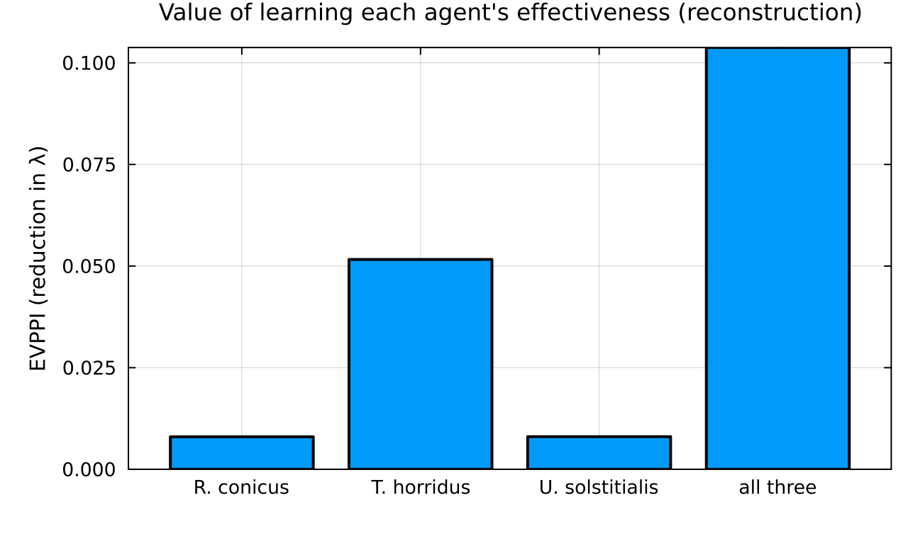

Replication: biological and operational uncertainty in weed control (Li et al. 2021)
Simon Frost
- Replications of published analyses
- The paper
- Biological uncertainty alone (Table 1)
- The matrix models
- The joint analysis (Table 2 and Section 3.4)
- Partial values do not add
- What the package adds
- What to take away
- Next
Replications of published analyses
This is the fourth of the replication vignettes (16 to 20). It is the least complete of them, and says so: the paper’s first analysis is reproduced from its printed table, its matrix models are rebuilt from the supplement and checked against 195 published growth rates, but its joint analysis of two sources of uncertainty is not reproduced, and the vignette shows where the two part. The comparisons are in the test suite (test/fixtures/replications/li2021_thistle.json, test/test_replications.jl).
The paper
Li, Keller, Runge and Shea (2021), “Weighing the unknowns: Value of Information for biological and operational uncertainty in invasion management”, Journal of Applied Ecology 58:1621-1630, doi:10.1111/1365-2664.13904, CC BY 4.0. The inputs are Table 1 of the article and Tables S2 and S5 to S8 of its supporting information.
Decision. Which biological control agent to release against musk thistle (Carduus nutans) in a newly invaded region.
Actions. No management (the baseline), or one of three insects: the weevils Rhinocyllus conicus and Trichosirocalus horridus, and the gall fly Urophora solstitialis.
States. Biological uncertainty: which of three demographic models, fitted to populations in Australia, New Zealand and the USA, describes the new population. Operational uncertainty: how effective each agent will be.
Belief. Equal weights throughout.
Outcome. The long-term growth rate λ of the weed population, the dominant eigenvalue of a four-stage matrix model; the population grows when λ \> 1. It is a dimensionless rate and lower is better, so the payoff is minus λ.
Biological uncertainty alone (Table 1)
using DecisionAnalysis
using LinearAlgebra: eigvals
using Statistics: quantile
include(joinpath("..", "_common.jl"))
using Plots
models = [:Australia, :New_Zealand, :USA]
agents4 = [:no_management, :R_conicus, :T_horridus, :U_solstitialis]
# Table 1 of the paper: λ by action (rows) and model (columns). Effectiveness fixed:
# R. conicus -30% seed production, T. horridus -87% growth, U. solstitialis -70% seed.
lambda1 = [120 268 175
93 214 150
50 247 72
59 131 107] .// 100
table1 = DecisionProblem(PayoffTable(agents4, models, -lambda1),
FiniteBelief(models, fill(1 // 3, 3)); baseline=:no_management)
md_table(["action", "mean λ, paper", "mean λ, this package",
"reduction in λ over no management", "chosen"],
[[a, q, -e, g, a in decide(table1, MaxExpectedUtility()).chosen]
for (a, q, e, g) in zip(agents4, (1.88, 1.52, 1.23, 0.99),
aggregate(Expectation(), table1),
expected_gain_over_baseline(table1))]; digits=3)| action | mean λ, paper | mean λ, this package | reduction in λ over no management | chosen |
|---|---|---|---|---|
no_management | 1.88 | 1.877 | 0 | - |
R_conicus | 1.52 | 1.523 | 0.353 | - |
T_horridus | 1.23 | 1.23 | 0.647 | - |
U_solstitialis | 0.99 | 0.99 | 0.887 | yes |
best = -act_now_value(table1)
md_table(["quantity", "paper", "this package"],
[["minimum of the mean λ across models", 0.99, best],
["mean of the lowest λ in each model", 0.84, best - evpi(table1)],
["EVPI", 0.15, evpi(table1)],
["improvement, %", 14.9, 100 * evpi(table1) / best]]; digits=3)| quantity | paper | this package |
|---|---|---|
| minimum of the mean λ across models | 0.99 | 0.99 |
| mean of the lowest λ in each model | 0.84 | 0.843 |
| EVPI | 0.15 | 0.147 |
| improvement, % | 14.9 | 14.815 |
The 14.8% against 14.9% is the rounding of Table 1 to two decimals; from the seven-digit growth rates of Table S8 it is 15.0%.
The matrix models
The supplement gives the three matrices (Tables S5 to S7) and the vital rates behind them (Table S2). The equations that build a matrix from the vital rates are printed as an image and were not transcribed; the seed-production part of each matrix is reconstructed here from the standard form of the model (Shea and Kelly 1998), and a reduction f in fecundity gives A − f F.
# Tables S5-S7: stages seed bank, small, medium, large; A[i, j] = from stage j to i.
A = Dict(:Australia => [0.443 0.158430812 6.61047845 206.5575808
0.0039168 0.007796462 0.243364 7.6090655
0.00040368 0.003057318 0.03137504 0.7930786
0.00047952 0.010046479 0.06125185 0.9449927],
:New_Zealand => [0.0382 11.6684 282.5608 415.5972
0.1847 1.513 34.9261 51.367
0 0.0091 0 0
0 0.0056 0.022 0],
:USA => [0.2597 0.09163091 9.2152853 256.844683
0.025119 0.02495052 0.9921935 27.654015
0.004881 0.17393494 0.4155895 5.373591
0 0.02716974 0.137946 0])
# Table S2: survival σ of S, M, L; bolting β; potential seeds π; seed escaping floral
# herbivory φ; seed entering the seed bank ν; establishing ε; growth of an establishing
# seed to M and L, γ3 and γ4.
vital = Dict(:Australia => (σ=[0.0167, 0.0818, 0.4393], β=[0.1765, 0.5385, 0.9362],
π=[125, 349, 1168], φ=1.0, ν=0.43, ε=0.0194, γ3=0.0841, γ4=0.0999),
:New_Zealand => (σ=[0.1164, 0.6813, 0.7532], β=[0.262, 0.9516, 0.9828],
π=[2437, 2776, 3576], φ=1.0, ν=0.157, ε=0.0194, γ3=0.0, γ4=0.0),
:USA => (σ=[0.2182, 0.5633, 0.7474], β=[0.018, 0.3596, 1.0],
π=[100, 195, 1473], φ=1.0, ν=0.2333, ε=0.03, γ3=0.1627, γ4=0.0))
function fecundity_part(v)
F = zeros(4, 4)
for j in 1:3
seeds = v.σ[j] * v.β[j] * v.π[j] * v.φ
F[:, j + 1] = seeds .* [v.ν, v.ε * (1 - v.γ3 - v.γ4), v.ε * v.γ3, v.ε * v.γ4]
end
return F
end
growth(m, f) = maximum(real, eigvals(A[m] .- f .* fecundity_part(vital[m])))
# A few rows of Table S8 (published λ for Australia, New Zealand, USA).
checks = [0.0 => (1.20, 2.68, 1.75), 0.3 => (0.9257896, 2.1403351, 1.5000536),
0.7 => (0.592773, 1.314724, 1.071436), 0.973 => (0.4513717, 0.4389873, 0.5087749)]
md_table(["fecundity reduction", "model", "λ published", "λ rebuilt"],
[[f, m, p, growth(m, f)] for (f, pub) in checks for (m, p) in zip(models, pub)];
digits=4)| fecundity reduction | model | λ published | λ rebuilt |
|---|---|---|---|
| 0 | Australia | 1.2 | 1.2028 |
| 0 | New_Zealand | 2.68 | 2.6832 |
| 0 | USA | 1.75 | 1.7483 |
| 0.3 | Australia | 0.9258 | 0.9258 |
| 0.3 | New_Zealand | 2.1403 | 2.1399 |
| 0.3 | USA | 1.5001 | 1.5001 |
| 0.7 | Australia | 0.5928 | 0.5928 |
| 0.7 | New_Zealand | 1.3147 | 1.3144 |
| 0.7 | USA | 1.0714 | 1.0714 |
| 0.973 | Australia | 0.4514 | 0.4514 |
| 0.973 | New_Zealand | 0.439 | 0.4388 |
| 0.973 | USA | 0.5088 | 0.5088 |
Over all 65 literature records of fecundity reduction in Table S8 and the three models, the rebuilt growth rates agree with the published ones to 0.0006 (the test suite checks every one).
The joint analysis (Table 2 and Section 3.4)
For operational uncertainty the paper takes, for each agent, the 25%, 50% and 75% quantiles of the fecundity reductions recorded in the literature, giving 27 combinations, which with three models makes 81 states.
# Table S8: recorded proportional reductions in fecundity, each agent alone.
recorded = (R_conicus=[0.028, 0.0283, 0.042, 0.061, 0.072, 0.088, 0.09, 0.09, 0.143,
0.153526970954, 0.195020746888, 0.222, 0.23, 0.26, 0.28, 0.3, 0.32,
0.32, 0.336, 0.345, 0.36, 0.363, 0.381, 0.386, 0.44, 0.45, 0.45,
0.467, 0.489, 0.495850622407, 0.52, 0.52, 0.57, 0.68, 0.723707664884,
0.733, 0.733, 0.737, 0.770053475936, 0.78, 0.8, 0.8, 0.8,
0.843137254902, 0.88, 0.933, 0.933, 0.973, 0.973],
T_horridus=[-0.505347593583, -0.23768115942, -0.00487804878, 0.080430879713,
0.3, 0.591549295775, 0.596685082873, 0.72],
U_solstitialis=[0.04, 0.06, 0.072, 0.088, 0.11, 0.45, 0.63, 0.7])
agents = collect(keys(recorded))
quartiles = map(x -> quantile(x, [0.25, 0.5, 0.75]), recorded)
md_table(["agent", "records", "25%", "50%", "75%"],
[[a, length(recorded[a]), quartiles[a]...] for a in agents]; digits=3)| agent | records | 25% | 50% | 75% |
|---|---|---|---|---|
R_conicus | 49 | 0.23 | 0.44 | 0.733 |
T_horridus | 8 | -0.063 | 0.19 | 0.593 |
U_solstitialis | 8 | 0.069 | 0.099 | 0.495 |
combos = [(m, r, t, u) for m in models for r in 1:3 for t in 1:3 for u in 1:3]
Q = [-growth(c[1], quartiles[a][c[k + 1]]) for (k, a) in enumerate(agents), c in combos]
labels = [Symbol(c[1], "_", c[2], c[3], c[4]) for c in combos]
with_none = vcat(permutedims([-growth(c[1], 0.0) for c in combos]), Q)
joint = DecisionProblem(PayoffTable(vcat(:no_management, agents), labels, with_none),
FiniteBelief(labels, fill(1 / 81, 81)); baseline=:no_management)
by_model = [c[1] for c in combos]
by_effectiveness = [c[2:4] for c in combos]
base = -act_now_value(joint)
md_table(["quantity, % of the best expected λ", "paper", "this reconstruction"],
[["EVPI (both sources resolved)", 15.6, 100 * evpi(joint) / base],
["biological uncertainty alone", 8.5, 100 * evppi(joint, by_model) / base],
["operational uncertainty alone", 10.5, 100 * evppi(joint, by_effectiveness) / base]];
digits=1)| quantity, % of the best expected λ | paper | this reconstruction |
|---|---|---|
| EVPI (both sources resolved) | 15.6 | 8 |
| biological uncertainty alone | 8.5 | 0 |
| operational uncertainty alone | 10.5 | 8 |
These do not agree, and we cannot make them agree from what is published. The paper’s Table 2 is an image of the best agent in each of the 81 cells, without growth rates. Read cell by cell:
letter = Dict(:R_conicus => 'R', :T_horridus => 'T', :U_solstitialis => 'U')
ours(m) = String([letter[agents[argmax(Q[:, k])]] for k in 1:81 if combos[k][1] == m])
table2 = (Australia="RRURRUTTTRRURRUTTTRRRRRRRRR", USA="RRURRUTTTRRURRUTTTRRRRRRRRR",
New_Zealand="TTTTTTTTTTTTTTTTTTRRRTTTTTT")
md_table(["model", "best agent in the 27 combinations, paper (Table 2)", "this reconstruction",
"cells that differ"],
[[m, "`" * table2[m] * "`", "`" * ours(m) * "`",
count(collect(table2[m]) .!= collect(ours(m)))] for m in models])| model | best agent in the 27 combinations, paper (Table 2) | this reconstruction | cells that differ |
|---|---|---|---|
Australia | RRURRUTTTRRURRUTTTRRRRRRRRR | RRURRUTTTRRURRUTTTRRRRRRRRR | 0 |
New_Zealand | TTTTTTTTTTTTTTTTTTRRRTTTTTT | RRURRUTTTRRURRUTTTRRRRRRRRR | 18 |
USA | RRURRUTTTRRURRUTTTRRRRRRRRR | RRURRUTTTRRURRUTTTRRRRRRRRR | 0 |
(The combinations are ordered with R. conicus slowest and U. solstitialis fastest, each at its 25%, 50% and 75% quantile.) The Australian and American columns are reproduced in every cell. The New Zealand column is not: the paper has T. horridus best in 24 of 27 cells, including cells where it is at its lower quartile, a negative reduction in fecundity.
The reason the reconstruction cannot produce that is structural. When every agent acts only on fecundity, as the paper says it assumed for this analysis, λ falls with the reduction in every model, so the agent with the largest reduction is the best under all three models at once. Then knowing the model never changes the choice and the value of resolving biological uncertainty is exactly zero. The paper’s 8.5%, and its different best agents for different models, require the effect of T. horridus to have entered its calculation in some other way (the same insect cuts rosette growth by 87% in Table 1, where it is indeed the best agent for two models). That cannot be settled without the authors’ code; the Dryad deposit cited in the paper could not be retrieved.
Partial values do not add
The paper’s own numbers make the point for which this replication was chosen: the value of resolving biological uncertainty (8.5%) and operational uncertainty (10.5%) sum to 19.0%, more than the 15.6% of resolving both. The two overlap. Partial values are neither additive nor a decomposition of the EVPI.
The reconstruction shows the same thing inside the operational uncertainty, where it can be trusted: which agent’s effectiveness is worth measuring?
pretty(a) = replace(String(a), "_" => ". ")
one = [a => evppi(joint, [c[k + 1] for c in combos]) for (k, a) in enumerate(agents)]
two = [(agents[i], agents[j]) => evppi(joint, [(c[i + 1], c[j + 1]) for c in combos])
for (i, j) in ((1, 2), (1, 3), (2, 3))]
md_table(["effectiveness learned", "EVPPI (reduction in λ)", "sum of the separate values"],
vcat([[pretty(a), v, v] for (a, v) in one],
[[join(pretty.(pair), " and "), v, sum(last(o) for o in one if first(o) in pair)]
for (pair, v) in two],
[["all three (operational uncertainty)", evppi(joint, by_effectiveness),
sum(last.(one))]]); digits=4)| effectiveness learned | EVPPI (reduction in λ) | sum of the separate values |
|---|---|---|
| R. conicus | 0.008 | 0.008 |
| T. horridus | 0.0516 | 0.0516 |
| U. solstitialis | 0.008 | 0.008 |
| R. conicus and T. horridus | 0.0739 | 0.0596 |
| R. conicus and U. solstitialis | 0.0501 | 0.016 |
| T. horridus and U. solstitialis | 0.057 | 0.0597 |
| all three (operational uncertainty) | 0.1038 | 0.0676 |
plt = bar(["R. conicus", "T. horridus", "U. solstitialis", "all three"],
[last.(one)..., evppi(joint, by_effectiveness)]; legend=false,
ylabel="EVPPI (reduction in λ)",
title="Value of learning each agent's effectiveness (reconstruction)")
png_figure(plt)
Learning the effectiveness of T. horridus alone is worth half of the whole: it is the agent whose plausible range runs from harmful to best. The other two are worth little alone, and all three together are worth more than the three separate values added up, because much of the value lies in the comparison between agents, which no single measurement supplies. Both directions occur in this one table: R. conicus and U. solstitialis are worth three times the sum of their parts together, while T. horridus and U. solstitialis are worth slightly less than theirs.
What the package adds
Beyond the partition of the operational uncertainty by agent, above:
md_table(["rule (reconstruction, 81 states)", "choice"],
[["expected λ", decide(joint, MaxExpectedUtility()).chosen],
["minimax regret", decide(joint, MinimaxRegret()).chosen],
["maximin (lowest worst-case λ)", decide(joint, Maximin()).chosen]])| rule (reconstruction, 81 states) | choice |
|---|---|
| expected λ | R_conicus |
| minimax regret | R_conicus |
| maximin (lowest worst-case λ) | R_conicus |
md_table(["action", "expected λ", "expected reduction over no management", "worst-case λ"],
[[a, -e, g, -w]
for (a, e, g, w) in zip(joint.payoff.actions, aggregate(Expectation(), joint),
expected_gain_over_baseline(joint),
aggregate(WorstCase(), joint))]; digits=3)| action | expected λ | expected reduction over no management | worst-case λ |
|---|---|---|---|
no_management | 1.878 | 0 | 2.683 |
R_conicus | 1.299 | 0.579 | 2.27 |
T_horridus | 1.583 | 0.295 | 2.793 |
U_solstitialis | 1.612 | 0.266 | 2.561 |
No agent brings the expected growth rate below one in the reconstruction, and T. horridus, whose lower quartile is an increase in seed production, is worse than no management in its worst case.
What to take away
- Table 1 of the paper is reproduced: U. solstitialis is the best single agent under biological uncertainty (mean λ 0.99), and the EVPI is 0.15, about 15% of it.
- The matrix models are rebuilt from the supplement and agree with all the published growth rates of Table S8 to 0.0006.
- The joint analysis is not reproduced. The paper reports 15.6% (both), 8.5% (biological) and 10.5% (operational); the reconstruction gives 8.0%, 0.0% and 8.0%, and reproduces two of the three columns of the paper’s Table 2. With effects on fecundity only, the biological value must be zero, so the paper’s calculation used something more for T. horridus than it describes.
- Partial values do not add: above the whole in the paper’s numbers, below it in the reconstruction’s partition by agent.
Next
Monitoring water quality turns from perfect information to a monitoring programme that makes errors.